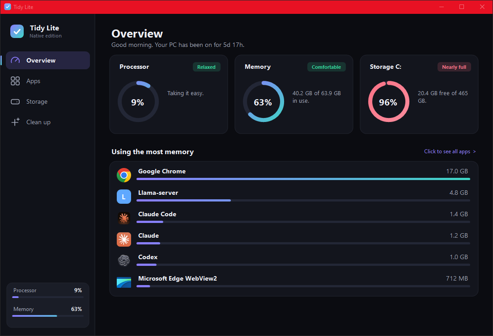
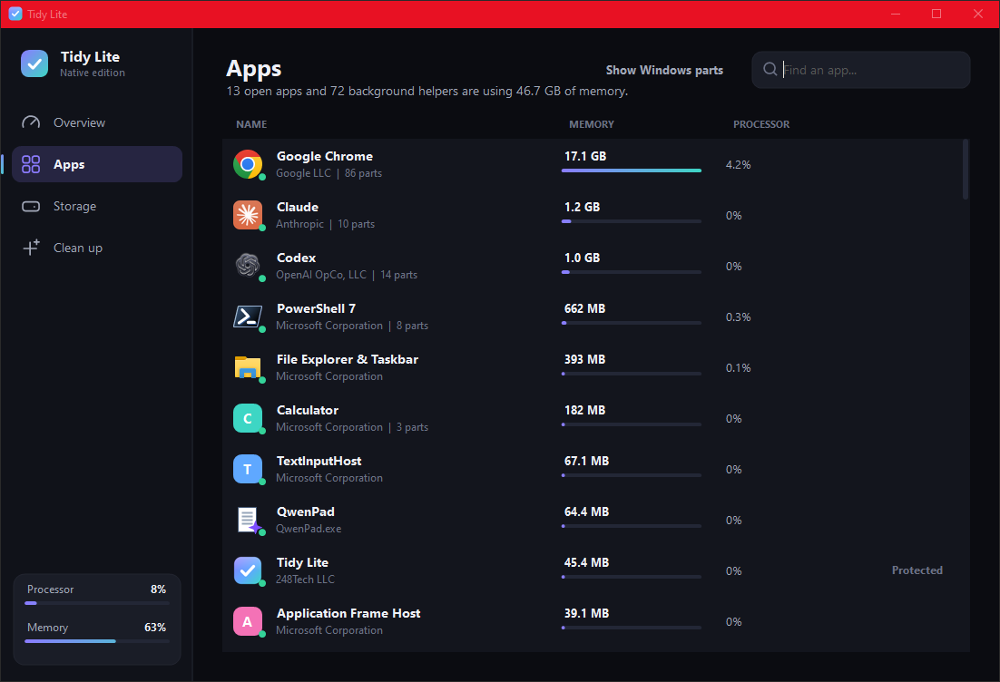
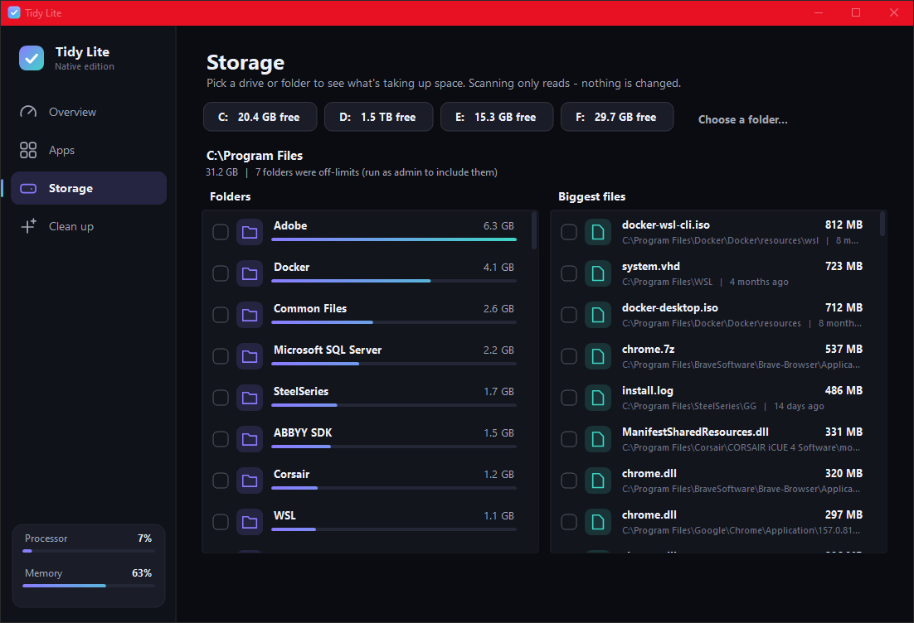
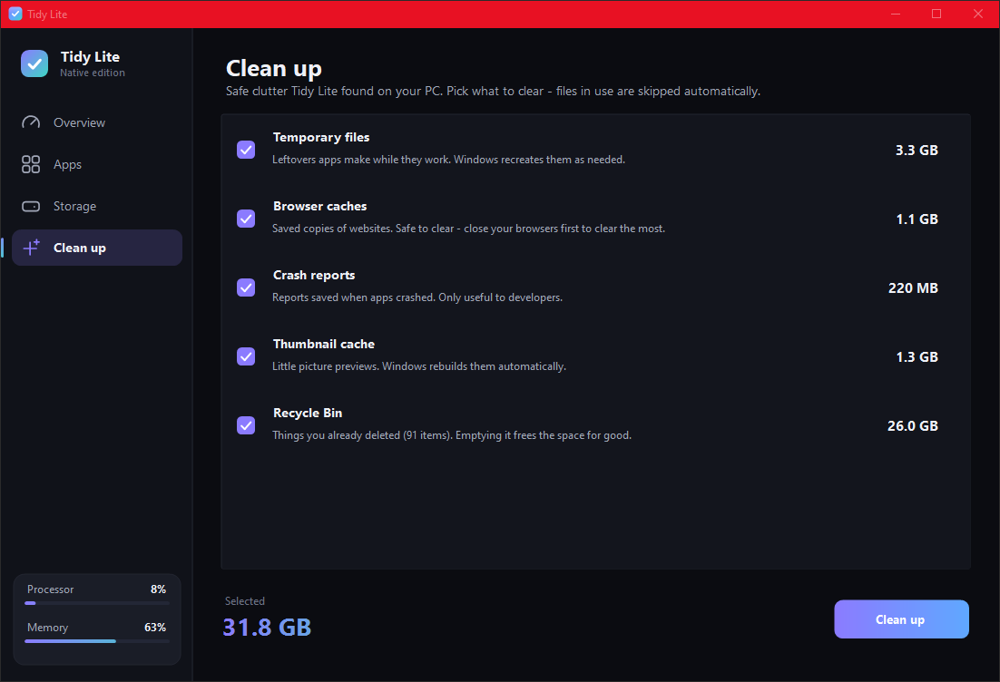

Tidy Lite shows which apps are using your memory, what's filling your drive and what's safe to clean, in plain English. There's no browser engine, no runtime and no installer, so it's at home on old and low-memory PCs.
Windows 10 & 11 · 64-bit · portable · uses about 45 MB of memory · MIT license

Four pages, in plain English, in a native window.
Processor, memory and drive gauges with moods like “Relaxed” or “Getting full”, plus the apps using the most memory.
Programs grouped into apps with real icons and live memory and CPU. Close politely or Force quit. Critical Windows processes are protected.
Scan any drive or folder, click into the biggest folders, and browse the biggest files. Then move them to the Recycle Bin, with Undo.
Temp files, browser caches, crash reports, the thumbnail cache and the Recycle Bin. You see the sizes before you clean.
111 KB, with no web engine or runtime to download. It uses the .NET Framework that's already part of Windows.
No network access, no telemetry, no update checks. It doesn't even write a settings file.
Custom-drawn, follows your Windows dark or light setting, and sharp on high-DPI screens.



One 111 KB file. Run it from your Desktop or a USB stick.
Want a treemap, live graphs, or to check your PC from your phone? Get the full version.
| Tidy Lite | Tidy | |
|---|---|---|
| Download size | 111 KB | 13 MB |
| Memory in use | ~45 MB total | ~75 MB + WebView2 |
| Apps, Close / Force quit | ✅ | ✅ |
| Storage scan, Recycle Bin + Undo | ✅ lists | ✅ treemap |
| Clean up | ✅ | ✅ |
| Live graphs, command palette | — | ✅ |
| Remote access from your phone | — | ✅ |
It's a native WinForms app compiled with the C# compiler built into Windows. It uses the .NET Framework that Windows 10 and 11 already have, with no web engine and no third-party libraries.
Yes. Deleted files go to the Recycle Bin with Undo, critical Windows processes and folders are protected, and it never connects to the network. The source is open on GitHub.
The exe isn't code-signed yet, so SmartScreen doesn't recognise it. Click More info, then Run anyway, or compare its SHA-256 hash with the one published on the release.
Tidy Lite covers apps, storage and clean up in 111 KB. Tidy adds a storage treemap, live graphs, a command palette and remote access from your phone.